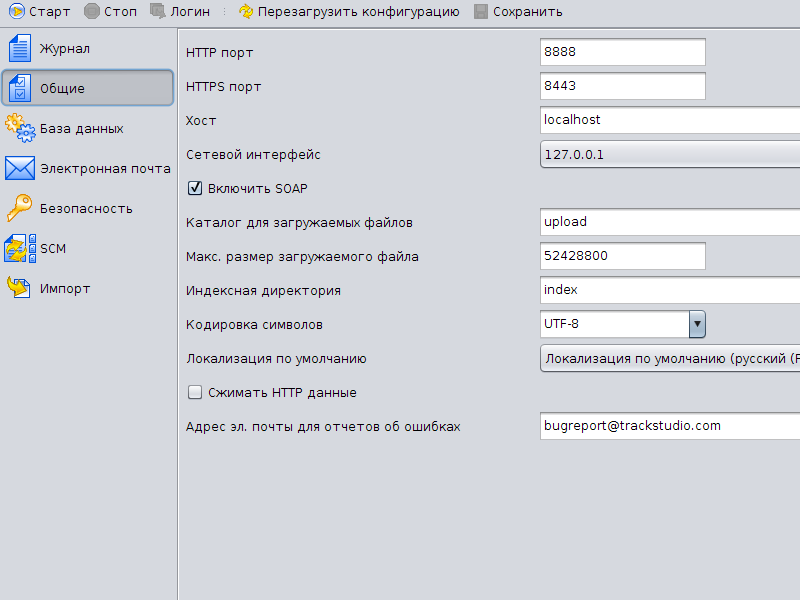
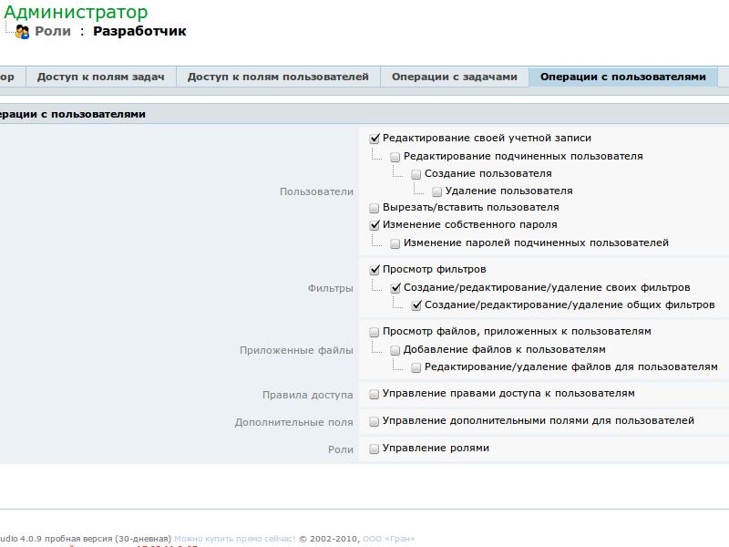
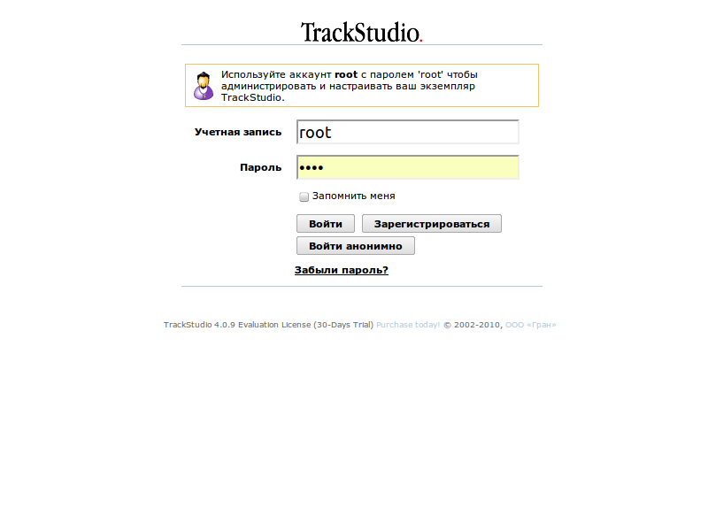
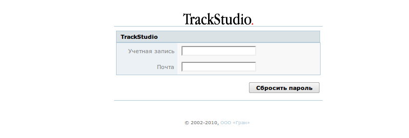

|
<< Click to Display Table of Contents >> Navigation: Rus > Руководство администратора > Как управлять настройками безопасности |
Как правило, мы поставляем примеры настроенных конфигураций, в которых корневой пользователь имеет логин root и пароль root, а у остальных пользователей пароль совпадает с названием учетной записи. Не открывайте для тестовых экземпляров доступ для внешних IP, прежде чем смените все пароли. Для того, чтобы закрыть возможность входить в систему с внешних IP, отредактируйте свойство jetty.host в файле jetty/etc/jetty.xml:
<Call name="addConnector">
<Arg>
<New class="org.mortbay.jetty.bio.SocketConnector">
<Set name="host">
<SystemProperty default="127.0.0.1" name="jetty.host"/>
</Set>
<Set name="port">
<SystemProperty default="8888" name="jetty.port"/>
</Set>
<Set name="maxIdleTime">50000</Set>
<Set name="lowResourceMaxIdleTime">1500</Set>
<Set name="responseBufferSize">1024</Set>
</New>
</Arg>
</Call>
Либо, что проще и предпочтительнее, в программе управления сервером TrackStudio (SMAN) на вкладке "Общие" выберите сетевой интерфейс 127.0.0.1, либо IP-адрес сервера в локальной сети.

В TrackStudio вы можете указать требования к паролям с целью обеспечить большую безопасность пользователей и вашего экземпляра TrackStudio.
Если вы используете TrackStudio Standalone, запустите программу управления сервером TrackStudio (SMAN). Перейдите на вкладку "Безопасность".
Настройте политику безопасности.
Если вы используете TrackStudio WAR, редактируйте указанные свойства в файле trackstudio.properties (если этот файл отсутствует, создайте его).
trackstudio.security.password.min 6
Вы можете ограничить минимальную длину пароля (например, шестью символами).
trackstudio.security.password.complex yes
Также вы можете потребовать, чтобы пароли удовлетворяли определенным критериям сложности. То есть содержали в себе буквы разных регистров, цифры, и специальные символы, и не входили при этом в словарь.
trackstudio.security.password.maxage 30
Укажите максимальный возраст пароля в днях. По истечению этого периода система потребует от пользователя сменить пароль.
trackstudio.security.password.history 4
Вы можете включить журнализацию паролей и указать, сколько паролей должна "помнить" система. Пользователю будет запрещено менять свой пароль на один из старых. Пароли при этом хранятся в хешированном виде.
trackstudio.security.password.changefirst yes
Вы можете потребовать от пользователя смены пароля при его первом входе. Это полезно, например, при автоматической регистрации через email. В этом случае пароль высылается пользователю в открытом виде в письме и он может быть скомпрометирован.
trackstudio.security.password.case no
Вы можете включить использование регистронезависимых названий учетных записей, в этом случае username, Username, USERNAME и UserName будут разными учетными записями. В обычных же условиях система считает всё это одной и той же учетной записью и не дает регистрировать варианты в разных регистрах.
trackstudio.loginAsAnotherUser yes
Если этот параметр включен (а он включен по умолчанию), вышестоящий пользователь может входить в систему, используя имя учетной записи нижестоящего пользователя и свой пароль. root со своим паролем может входить, используя учетную запись любого пользователя. Это может быть полезно на этапе настройки системы.
Пользователь может сменить свой пароль, если ему разрешено это в настройках его роли:

Пользователь также может сменить пароль подчиненным пользователям, если это разрешено настройками.
Если в системе включен и настроен SMTP-сервер, пользователь сможет сбросить свой пароль, нажав на соответствующую кнопку на странице входа в систему. По электронной почте, указанной в настройках пользователя в системе, он получит письмо с новым паролем.


Ключевой элемент безопасности в TrackStudio — это идентификатор сессии. Он никогда не должен передаваться непосредственно пользователю. Идентификатор сессии пишется в cookie, относящиеся к конкретному сайту и конкретному экземпляру TrackStudio. Получив в свое распоряжение идентификатор сессии, злоумышленники могут подделать cookie и войти в систему от вашего имени. Мы фильтруем данные, вводимые пользователем, в том числе и через электронную почту, и через дополнительные поля. Потенциальную угрозу безопасности представляют скрипты, триггеры, почтовые и web- шаблоны. Никогда не выводите в них идентификатор сессии в каком бы то ни было виде.
Сессии хранятся внутри активного экземпляра TrackStudio и не пишутся в базу данных. После перезапуска TrackStudio все старые идентификаторы сессий становятся невалидными, и пользователь должен будет снова ввести пароль на странице входа в систему.